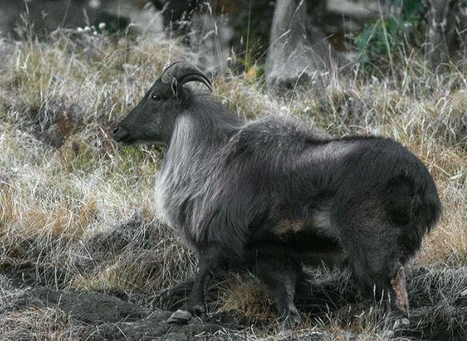

Kedarnath(Musk Deer) Wildlife Sanctuary
Known for its rich floral species, Kedarnath Sanctuary is situated in Chamoli and Rudraprayag district of Garhwal region in the state of Uttarakhand. The sanctuary covers the area of 975 km sq and was founded in the year 1972. It is named after the famous Kedarnath Temple, which is situated just outside its northern border. The entire 14 km trekking route from Gauri Kund to Kedarnath Temple ( passes through this wildlife sanctuary in Uttarakhand. This wildlife sanctuary in Uttarakhand is also the largest protected area in the western Himalayas and is also known as Kedarnath Musk Deer Sanctuary as it protects this endangered species. Moreover, the sanctuary also offers astonishing views of valleys, glaciers, forests, grasslands, butterflies, and a plethora of flowers. The sanctuary has a number of Hindu temples located within its vicinity, along with Kedarnath Temple, Mandani, Madhyamaheshwar, Tungnath, Ansuya Devi and Rudranath are some important Hindu shrines that are visited in wildlife reserve’s precincts.

RudraPryag
The famed town of Rudraprayag is named after the Rudra avatar of Lord Shiva. This heavenly town is encircled by the emerald lakes, glaciers, foaming rivers and silver streams. The pristine town of Rudraprayag is nestled on the holy confluence of Alaknanda and Mandakini rivers, at 34 km from Srinagar (Garhwal). It is perched at an average elevation of 895 metres about 2,936 feet above sea level.Rudraprayag is one of the Panch Prayag or five confluences of Alaknanda River. Rudraprayag is blessed with nature's bounty, the climate of which depends upon the height of the region.